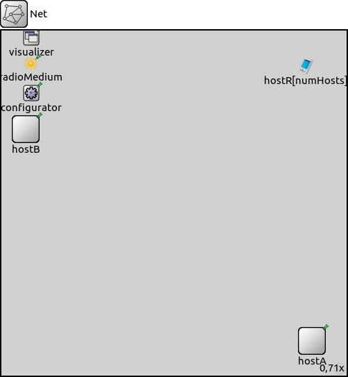
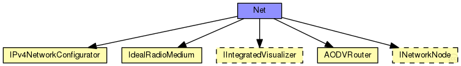

This documentation is released under the Creative Commons license
This documentation is released under the Creative Commons license(no description)
The following diagram shows usage relationships between types. Unresolved types are missing from the diagram.
The following diagram shows inheritance relationships for this type. Unresolved types are missing from the diagram.
| Name | Type | Default value | Description |
|---|---|---|---|
| numHosts | int | ||
| hostType | string | "AODVRouter" | |
| mediumType | string | "IdealRadioMedium" |
| Name | Value | Description |
|---|---|---|
| isNetwork | ||
| display | bgb=700,700 |
| Name | Type | Default value | Description |
|---|---|---|---|
| configurator.minLinkWeight | double | 1E-3 | |
| configurator.config | xml | xml(" |
XML configuration parameters for IP address assignment and adding manual routes |
| configurator.assignAddresses | bool | true |
assign IP addresses to all interfaces in the network |
| configurator.assignDisjunctSubnetAddresses | bool | true |
avoid using the same address prefix and netmask on different links when assigning IP addresses to interfaces |
| configurator.addStaticRoutes | bool | true |
add static routes to the routing tables of all nodes to route to all destination interfaces (only where applicable; turn off when config file contains manual routes) |
| configurator.addDefaultRoutes | bool | true |
add default routes if all routes from a source node go through the same gateway (used only if addStaticRoutes is true) |
| configurator.addSubnetRoutes | bool | true |
add subnet routes instead of destination interface routes (only where applicable; used only if addStaticRoutes is true) |
| configurator.optimizeRoutes | bool | true |
optimize routing tables by merging routes, the resulting routing table might route more packets than the original (used only if addStaticRoutes is true) |
| configurator.dumpTopology | bool | false |
print extracted network topology to the module output |
| configurator.dumpLinks | bool | false |
print recognized network links to the module output |
| configurator.dumpAddresses | bool | false |
print assigned IP addresses for all interfaces to the module output |
| configurator.dumpRoutes | bool | false |
print configured and optimized routing tables for all nodes to the module output |
| configurator.dumpConfig | string | "" |
write configuration into the given config file that can be fed back to speed up subsequent runs (network configurations) |
| radioMedium.neighborCache.refillPeriod | double | ||
| hostR.status.initialStatus | string | "UP" |
TODO @signal, @statistic |
| hostR.routingTable.forwarding | bool | ||
| hostR.routingTable.multicastForwarding | bool | ||
| hostR.interfaceTable.displayAddresses | bool | false |
whether to display IP addresses on links |
| hostR.pcapRecorder.verbose | bool | false |
whether to log packets on the module output |
| hostR.pcapRecorder.pcapFile | string | "" |
the PCAP file to be written |
| hostR.pcapRecorder.snaplen | int | 65535 |
maximum number of bytes to record per packet |
| hostR.pcapRecorder.dumpBadFrames | bool | true |
enable dump of frames with hasBitError |
| hostR.pcapRecorder.moduleNamePatterns | string | "wlan[*] eth[*] ppp[*] ext[*]" |
space-separated list of sibling module names to listen on |
| hostR.pcapRecorder.sendingSignalNames | string | "packetSentToLower" |
space-separated list of outbound packet signals to subscribe to |
| hostR.pcapRecorder.receivingSignalNames | string | "packetReceivedFromLower" |
space-separated list of inbound packet signals to subscribe to |
| hostR.pcapRecorder.alwaysFlush | bool | false |
flush the pcapFile after each write to ensure that all packets are captured in case of a crash |
| hostR.lo0.lo.interfaceTableModule | string |
The path to the InterfaceTable module |
|
| hostR.lo0.lo.mtu | int | 4470B | |
| hostR.aodv.routingTableModule | string | "^.routingTable" | |
| hostR.aodv.interfaceTableModule | string | "^.interfaceTable" | |
| hostR.aodv.networkProtocolModule | string | "^.networkLayer.ip" | |
| hostR.aodv.askGratuitousRREP | bool | false |
see RFC 3561: 6.6.3 |
| hostR.aodv.useHelloMessages | bool | false |
see RFC 3561: 6.9 |
| hostR.aodv.useLocalRepair | bool | false |
see RFC 3561: 6.12 *not implemented yet* |
| hostR.aodv.udpPort | int | 654 | |
| hostR.aodv.maxPeriodicJitter | double | helloInterval / 4 |
it MUST NOT be negative; it MUST NOT be greater than MESSAGE_INTERVAL/2; it SHOULD NOT be greater than MESSAGE_INTERVAL/4. |
| hostR.aodv.periodicJitter | double | uniform(0s, maxPeriodicJitter) |
jitter for externally triggered message generation and message forwarding |
| hostR.aodv.maxJitter | double | 5ms |
RFC 5148: need more revise: As well as the decision as to whether to use jitter being dependent on the medium access control and lower layers, the selection of the MAXJITTER parameter SHOULD be appropriate to those mechanisms. |
| hostR.aodv.jitter | double | uniform(0ms, maxJitter) |
jitter for broadcasts |
| hostR.aodv.helloInterval | double | 1s |
every helloInterval seconds a node broadcasts Hello messages (if it is necessary) |
| hostR.aodv.allowedHelloLoss | int | 2 |
allowedHelloLoss * helloInterval is the lifetime value for Hello messages |
| hostR.aodv.activeRouteTimeout | double | 3s |
the timeout value for cached routes If Hello messages are used, then the ACTIVE_ROUTE_TIMEOUT parameter value MUST be more than the value (ALLOWED_HELLO_LOSS * HELLO_INTERVAL). |
| hostR.aodv.netDiameter | int | 35 |
the maximum possible number of hops between two nodes in the network |
| hostR.aodv.nodeTraversalTime | double | 0.04s |
an estimation of the average one-hop traversal time |
| hostR.aodv.rerrRatelimit | int | 10 |
maximum number of RERR messages that the AODV may originate in 1s. |
| hostR.aodv.rreqRetries | int | 2 |
specifies the number of times AODV will repeat an expanded ring search for a destination |
| hostR.aodv.rreqRatelimit | int | 10 |
maximum number of RREQ messages that the AODV may originate in 1s. |
| hostR.aodv.timeoutBuffer | int | 2 |
plus time to wait for a delayed RREP (due to congestion) (to omit this buffer set it to 0) |
| hostR.aodv.ttlStart | int | 2 |
specifies the TTL value when initiating a route request |
| hostR.aodv.ttlIncrement | int | 2 |
specifies the value by which the TTL will be incremented each time a RREQ is retransmitted |
| hostR.aodv.ttlThreshold | int | 7 |
the maximum value of TTL over which NET_DIAMETER value will be used to broadcast any RREQ |
| hostR.aodv.localAddTTL | int | 2 |
it is used by the formula which calculates the initial TTL of the RREQ for a local repair |
| hostR.aodv.myRouteTimeout | double | 2 * activeRouteTimeout |
the value of the lifetime field that a destination node places in RREPs |
| hostR.aodv.deletePeriod | double | 5 * max(activeRouteTimeout, helloInterval) |
the time after which an expired route is deleted |
| hostR.aodv.blacklistTimeout | double | rreqRetries * netTraversalTime |
the time after which a blacklisted node is removed from the blacklist |
| hostR.aodv.netTraversalTime | double | 2 * nodeTraversalTime * netDiameter |
an estimation of the traversal time for the complete network |
| hostR.aodv.nextHopWait | double | nodeTraversalTime + 0.01s |
timeout for a RREP-ACK |
| hostR.aodv.pathDiscoveryTime | double | 2 * netTraversalTime |
buffer timeout for each broadcasted RREQ message |
network Net { parameters: int numHosts; string hostType = default("AODVRouter"); string mediumType = default("IdealRadioMedium"); @display("bgb=700,700"); submodules: visualizer: <default("IntegratedCanvasVisualizer")> like IIntegratedVisualizer if hasVisualizer() { parameters: @display("p=61.1,14.3"); } configurator: IPv4NetworkConfigurator { parameters: @display("p=61.1,127.4"); } radioMedium: IdealRadioMedium { parameters: @display("p=59.8,67.6"); } hostA: <hostType> like INetworkNode { @display("p=630,630"); } hostB: <hostType> like INetworkNode { @display("p=50,200"); } hostR[numHosts]: AODVRouter { parameters: @display("i=device/pocketpc_s;r=,,#707070;"); } }
This documentation is released under the Creative Commons license